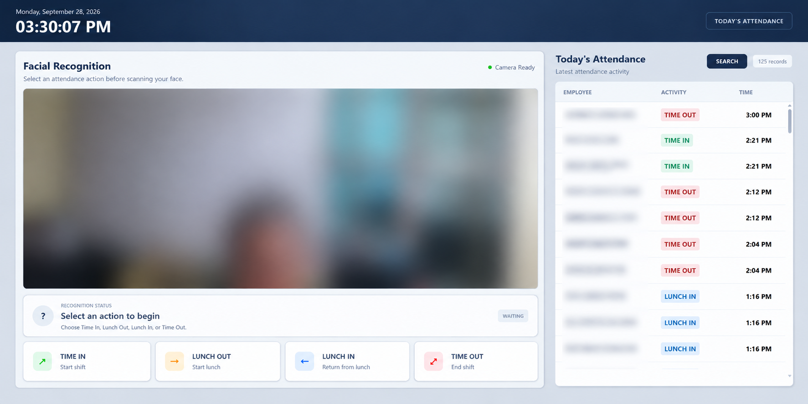
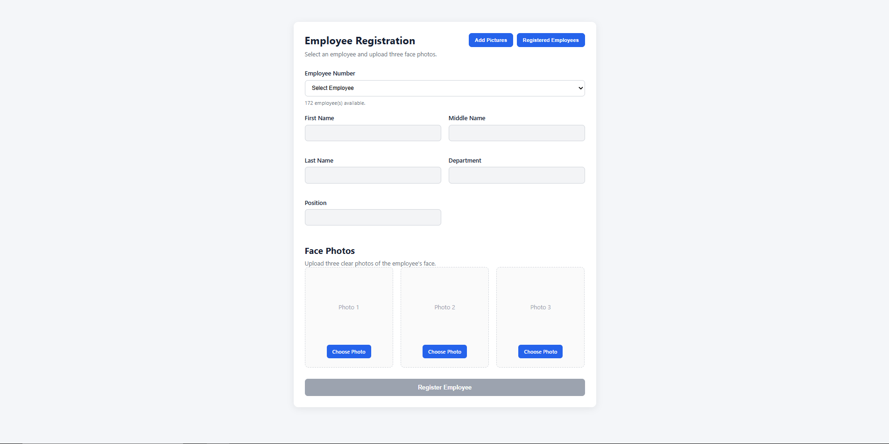
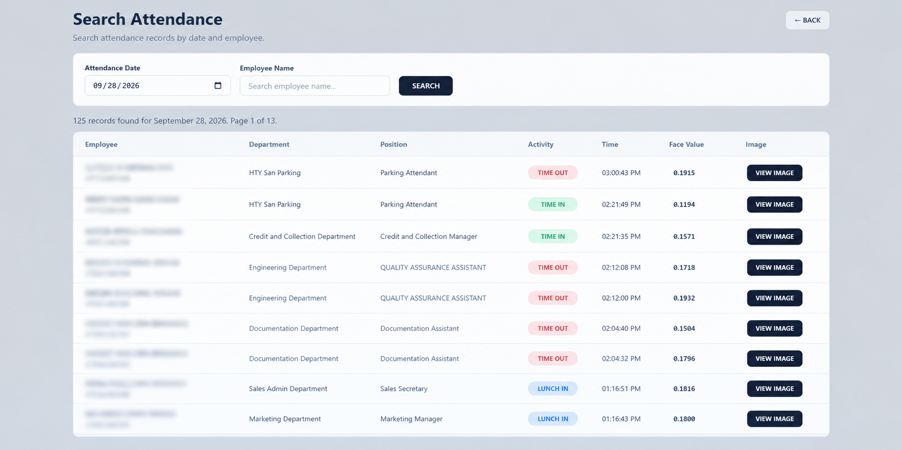

FEATURED PROJECT
Facial Recognition Attendance System
A web-based attendance management system that uses facial recognition to identify employees and record their attendance. The application combines employee registration, camera-based recognition, attendance tracking, and record searching in one interface designed for a workplace environment.
PROJECT SCREENSHOTS
System Overview
Explore the main interfaces of the Facial Recognition Attendance System, from real-time employee identification and attendance recording to employee registration and attendance record monitoring. These screenshots highlight the system's interface, core functionalities, and practical application in a workplace environment.






The Problem
Recording and monitoring employee attendance requires a reliable process for identifying employees and maintaining accurate time logs. Traditional attendance workflows can involve manual steps and may require additional effort when reviewing attendance activities. The system also needed to operate within an existing employee database and a local network environment while accommodating different attendance actions throughout the workday.
The Solution
I developed a web-based Facial Recognition Attendance System that combines facial identification, employee registration, and attendance recording in one interface. The system uses a camera-based recognition workflow to identify registered employees and supports attendance actions such as Time In, Lunch Out, Lunch In, and Time Out. It also provides attendance record searching and image viewing to help users review recorded activities. The application integrates with the employee data source and is designed for deployment within a local network environment.
Key Features
- Facial Recognition: Identifies registered employees using captured facial data.
- Employee Registration: Supports employee profile registration and facial data capture.
- Attendance Tracking: Supports Time In, Lunch Out, Lunch In, and Time Out activities.
- Attendance Monitoring: Displays recent attendance activities and their corresponding times.
- Attendance Search: Allows attendance records to be searched by date and employee.
- Recognition Status: Provides feedback during the recognition process and handles faces that cannot be identified.
- Database Integration: Connects employee information and attendance workflows with the existing data environment.
- Local Network Deployment: Supports access to the application within the intended workplace network environment.
My Role
I worked on the development and integration of the system's major components, including the web interface, backend processing, facial recognition workflow, employee data handling, and attendance recording. I also worked on the attendance action flow, camera interaction, recognition status handling, and attendance record searching. In addition, I handled database integration and deployment troubleshooting to help the application operate within the local network environment.
Technologies Used
Python, FastAPI, OpenCV, DeepFace, MySQL, JavaScript, HTML, and CSS. These technologies support backend processing, facial recognition, camera interaction, data storage, and the web-based user interface.